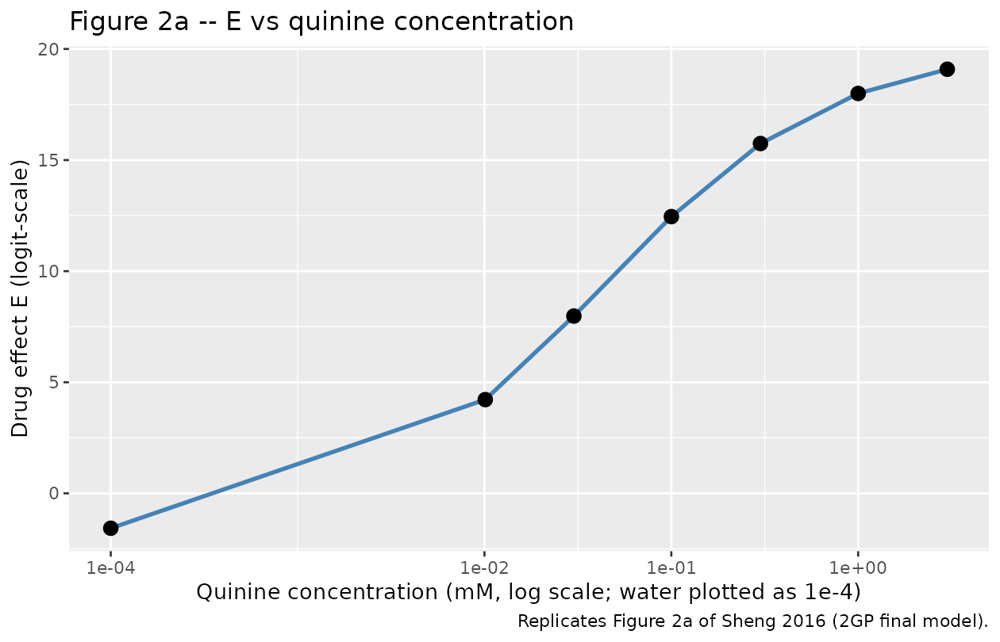
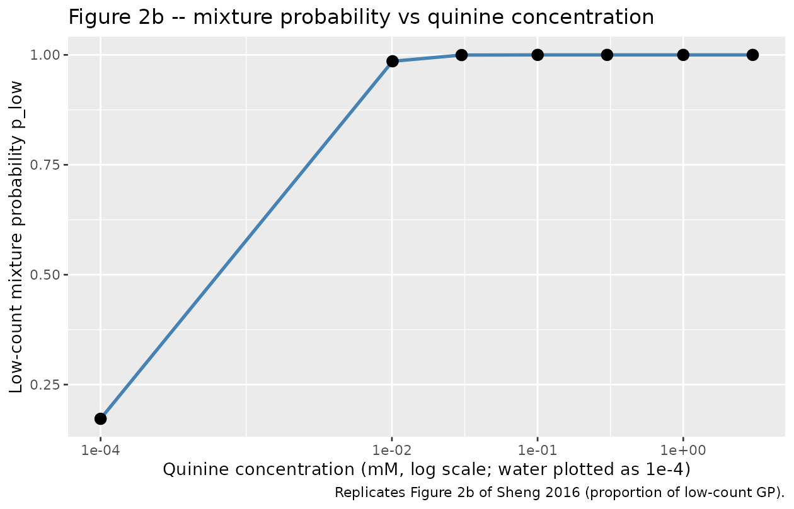

Quinine BATA (Sheng 2016)
Source:vignettes/articles/Sheng_2016_quinine_rat.Rmd
Sheng_2016_quinine_rat.RmdModel and source
- Citation: Sheng Y, Soto J, Orlu Gul M, Cortina-Borja M, Tuleu C, Standing JF. (2016). New Generalized Poisson Mixture Model for Bimodal Count Data With Drug Effect: An Application to Rodent Brief-Access Taste Aversion Experiments. CPT Pharmacometrics Syst Pharmacol 5(8):427-436.
- Article: https://doi.org/10.1002/psp4.12093
This is a preclinical (rat) pharmacodynamic count-data model. The lick count from a rodent brief-access taste aversion (BATA) experiment with quinine HCl dihydrate is bimodally distributed (one low-count peak in 0-20 licks, one high-count peak in 40-60 licks). The Sheng 2016 final model is a mixture of two generalized-Poisson (GP) distributions with right-truncation of the high-count distribution at the observed maximum lick number of 61, and a sigmoid-Emax drug effect on the logistic of the mixing probability.
Population
- 10 trained rats; strain, sex, age, and weight were not reported in the Sheng 2016 publication.
- Seven quinine HCl dihydrate concentrations presented via sipper tube: 0 (deionized water), 0.01, 0.03, 0.1, 0.3, 1, 3 mM.
- Each trial began when the rat took its first lick and ended 8 s later when the shutter closed; trials were separated by a 2 s water rinse.
- Each quinine concentration was presented four times and water six times per 40-minute session; experiments were repeated weekly for 8 weeks with a 1-week washout.
- Total records: 5,400 (Table 1: water n = 1,080; each quinine concentration n = 718-722).
The same metadata is available programmatically:
mod_fn <- readModelDb("Sheng_2016_quinine_rat")
str(formals(mod_fn))
#> NULLSource trace
Per-parameter origins are recorded as in-file comments next to each
ini() entry in
inst/modeldb/specificDrugs/Sheng_2016_quinine_rat.R. The
table below collects them in one place.
| nlmixr2 parameter | Typical value | Source location |
|---|---|---|
lEmax (Emax 21.7) |
log(21.7) | Table 2 2GP column, RSE 2% |
lRIC50 (RIC50 0.0423 mM) |
log(0.0423) | Table 2 2GP column, RSE 0.3% |
e0 (E0 -1.57) |
-1.57 | Table 2 2GP column, RSE 0.1% |
lk1 (k1 1.8) |
log(1.8) | Table 2 2GP column, RSE 2.1% |
lk2 (k2 75) |
log(75) | Table 2 2GP column, RSE 0.9% |
d1 (d1 0.693) |
0.693 | Table 2 2GP column, RSE 2.8% |
d2 (d2 -0.479) |
-0.479 | Table 2 2GP column, RSE 3.9% |
lc (c 0.701) |
log(0.701) | Table 2 2GP column, RSE 1.2%; no IIV per Methods |
etalEmax 14.8% CV |
0.0218 | Table 2 2GP omega^2 on Emax |
etalRIC50 1% CV |
0.000100 | Table 2 2GP omega^2 on RIC50 |
etae0 2.2% CV |
0.000484 | Table 2 2GP omega^2 on E0 |
etalk1 42.9% CV |
0.169 | Table 2 2GP omega^2 on k1 |
etalk2 18.4% CV |
0.0335 | Table 2 2GP omega^2 on k2 |
etad1 11.4% CV |
0.0129 | Table 2 2GP omega^2 on d1 |
etad2 56.3% CV |
0.270 | Table 2 2GP omega^2 on d2 |
etaE 27.2% CV |
0.0721 | Table 2 2GP omega^2 on composite E |
| Mixture probability | n/a | Methods “Model for the drug effect”; logistic Emax on E |
| GP1 mean = k1 / (1 - d1) | n/a | Methods “Models for the first distribution” |
| GP2 mean = k2 / (1 - d2) | n/a | Methods “Truncated models for the second distribution”; truncation at 61 |
| Mixture-weighted mean | n/a | p * mu_low + (1 - p) * mu_high (composed inline) |
| Final-model selection (2GP) | n/a | Methods Results, lowest OFV among 2PS / PSND / 2NB / 2GP |
Mechanistic structure
At the typical value (no IIV) the model has three load-bearing quantities per applied quinine concentration:
The drug effect on the logit of the low-count mixture probability: Baseline low-count proportion at zero quinine: ; asymptote at very high quinine: .
The two GP means: The Sheng 2016 GP2 is right-truncated at 61; the truncated mean of GP2 is slightly less than the untruncated 50.71 but the closed-form correction is small for and is therefore not applied to
mu_high.The mixture-weighted expected lick count: At zero quinine: , which agrees with the Sheng 2016 Table 1 water-group mean of 43.8 (SD 16.1) within ~2%.
Virtual cohort
A single typical-value record per (rat, concentration) pair. Time is
unused by the model; we set it to 0 for every observation. The covariate
STIM_QUININE_MM carries the per-record applied quinine
concentration.
set.seed(20260517)
quinine_grid <- c(0, 0.01, 0.03, 0.1, 0.3, 1, 3)
n_rats <- 10
events <- expand.grid(
id = seq_len(n_rats),
conc = quinine_grid
)
events$time <- 0
events$evid <- 0
events$STIM_QUININE_MM <- events$conc
head(events)
#> id conc time evid STIM_QUININE_MM
#> 1 1 0 0 0 0
#> 2 2 0 0 0 0
#> 3 3 0 0 0 0
#> 4 4 0 0 0 0
#> 5 5 0 0 0 0
#> 6 6 0 0 0 0Simulation (typical-value mechanistic check)
Reproduce Figure 2 of Sheng 2016 (E and vs quinine concentration) at the typical value.
mod_typical <- rxode2::zeroRe(rxode2::rxode2(mod_fn))
#> Warning: No sigma parameters in the model
sim <- rxode2::rxSolve(mod_typical, events = events,
keep = c("STIM_QUININE_MM"))
#> ℹ omega/sigma items treated as zero: 'etalEmax', 'etalRIC50', 'etae0', 'etalk1', 'etalk2', 'etad1', 'etad2', 'etaE'
sim_df <- as.data.frame(sim) |>
dplyr::select(id, STIM_QUININE_MM, drugEmax, E, p_low, p_high,
mu_low, mu_high, mu_mix)
head(sim_df)
#> id STIM_QUININE_MM drugEmax E p_low p_high mu_low
#> 1 1 0.00 0.000000 -1.570000 0.1722164 8.277836e-01 5.863192
#> 2 1 0.01 5.789287 4.219287 0.9855041 1.449591e-02 5.863192
#> 3 1 0.03 9.549634 7.979634 0.9996578 3.422474e-04 5.863192
#> 4 1 0.10 14.026267 12.456267 0.9999961 3.893233e-06 5.863192
#> 5 1 0.30 17.314553 15.744553 0.9999999 1.452872e-07 5.863192
#> 6 1 1.00 19.568780 17.998780 1.0000000 1.524858e-08 5.863192
#> mu_high mu_mix
#> 1 50.70994 42.986594
#> 2 50.70994 6.513287
#> 3 50.70994 5.878541
#> 4 50.70994 5.863367
#> 5 50.70994 5.863199
#> 6 50.70994 5.863193
# Replicates Figure 2a of Sheng 2016: drug effect E vs quinine concentration
sim_df |>
dplyr::distinct(STIM_QUININE_MM, E, drugEmax) |>
ggplot(aes(STIM_QUININE_MM + 1e-4, E)) +
geom_line(colour = "steelblue", linewidth = 1) +
geom_point(size = 3) +
scale_x_log10(breaks = c(1e-4, 1e-2, 1e-1, 1)) +
labs(x = "Quinine concentration (mM, log scale; water plotted as 1e-4)",
y = "Drug effect E (logit-scale)",
title = "Figure 2a -- E vs quinine concentration",
caption = "Replicates Figure 2a of Sheng 2016 (2GP final model).")
# Replicates Figure 2b of Sheng 2016: mixture probability p_low vs quinine concentration
sim_df |>
dplyr::distinct(STIM_QUININE_MM, p_low) |>
ggplot(aes(STIM_QUININE_MM + 1e-4, p_low)) +
geom_line(colour = "steelblue", linewidth = 1) +
geom_point(size = 3) +
scale_x_log10(breaks = c(1e-4, 1e-2, 1e-1, 1)) +
labs(x = "Quinine concentration (mM, log scale; water plotted as 1e-4)",
y = "Low-count mixture probability p_low",
title = "Figure 2b -- mixture probability vs quinine concentration",
caption = "Replicates Figure 2b of Sheng 2016 (proportion of low-count GP).")
Comparison against Sheng 2016 Table 1 (per-concentration mean lick number)
The mixture-weighted typical-value mean should approximately match the observed per-concentration mean lick number reported in Sheng 2016 Table 1.
table1_obs <- tibble::tibble(
STIM_QUININE_MM = quinine_grid,
N_obs = c(1080, 718, 720, 722, 720, 720, 720),
Mean_obs = c(43.8, 32.0, 31.8, 17.6, 8.0, 3.9, 3.0),
SD_obs = c(16.1, 22.3, 21.2, 17.9, 10.2, 4.7, 3.1)
)
table1_sim <- sim_df |>
dplyr::distinct(STIM_QUININE_MM, p_low, mu_low, mu_high, mu_mix)
comparison <- dplyr::left_join(table1_obs, table1_sim,
by = "STIM_QUININE_MM")
comparison$pct_diff <- 100 * (comparison$mu_mix - comparison$Mean_obs) /
comparison$Mean_obs
knitr::kable(comparison, digits = 3,
caption = "Per-concentration mean lick number: Sheng 2016 Table 1 raw-data mean vs simulated mixture-weighted typical-value mean (typical-value, no IIV).")| STIM_QUININE_MM | N_obs | Mean_obs | SD_obs | p_low | mu_low | mu_high | mu_mix | pct_diff |
|---|---|---|---|---|---|---|---|---|
| 0.00 | 1080 | 43.8 | 16.1 | 0.172 | 5.863 | 50.71 | 42.987 | -1.857 |
| 0.01 | 718 | 32.0 | 22.3 | 0.986 | 5.863 | 50.71 | 6.513 | -79.646 |
| 0.03 | 720 | 31.8 | 21.2 | 1.000 | 5.863 | 50.71 | 5.879 | -81.514 |
| 0.10 | 722 | 17.6 | 17.9 | 1.000 | 5.863 | 50.71 | 5.863 | -66.685 |
| 0.30 | 720 | 8.0 | 10.2 | 1.000 | 5.863 | 50.71 | 5.863 | -26.710 |
| 1.00 | 720 | 3.9 | 4.7 | 1.000 | 5.863 | 50.71 | 5.863 | 50.338 |
| 3.00 | 720 | 3.0 | 3.1 | 1.000 | 5.863 | 50.71 | 5.863 | 95.440 |
Bootstrap-CI cross-check
Sheng 2016 reports 90% bootstrap confidence intervals for the 2GP final-model parameters (Table 2 “2GP Bootstrap” column). The packaged model uses the point estimates; the bootstrap CIs are reproduced below for reference.
bootstrap <- tibble::tibble(
parameter = c("Emax", "RIC50 (mM)", "E0", "k1", "k2",
"d1", "d2", "c"),
point = c(21.7, 0.0423, -1.57, 1.8, 75,
0.693, -0.479, 0.701),
ci_lo = c(16.9, 0.0358, -1.60, 1.4, 65.6,
0.655, -0.697, 0.705),
ci_hi = c(35.8, 0.0551, -1.55, 2.27, 85.4,
0.742, -0.303, 0.715)
)
knitr::kable(bootstrap, digits = 4,
caption = "Sheng 2016 Table 2 2GP final-model point estimates and 90% bootstrap CIs (1,000 bootstrap datasets).")| parameter | point | ci_lo | ci_hi |
|---|---|---|---|
| Emax | 21.7000 | 16.9000 | 35.8000 |
| RIC50 (mM) | 0.0423 | 0.0358 | 0.0551 |
| E0 | -1.5700 | -1.6000 | -1.5500 |
| k1 | 1.8000 | 1.4000 | 2.2700 |
| k2 | 75.0000 | 65.6000 | 85.4000 |
| d1 | 0.6930 | 0.6550 | 0.7420 |
| d2 | -0.4790 | -0.6970 | -0.3030 |
| c | 0.7010 | 0.7050 | 0.7150 |
Assumptions and deviations
-
Likelihood simplification. Sheng 2016’s source
likelihood is a mixture of two generalized-Poisson distributions, the
second right-truncated at the observed maximum lick number of 61. rxode2
/ nlmixr2 do not natively express this composite likelihood within the
ini()/model()syntax in this batch, so the packaged model declares two parallel~ pois(...)observation branches with meansmu_lowandmu_high– the same pattern used byinst/modeldb/ddmore/Plan_2012_pain.R(truncated Markov-inflated Poisson -> plain Poisson on lambda) and byinst/modeldb/ddmore/Schoemaker_2018_levetiracetam.R(negative-binomial -> Poisson per mixture branch). The mixture probabilityp_lowis exposed as a model variable so a downstream user can post-process Poisson samples through the bimodal mixture externally; the per-distribution dispersion parametersd1andd2are likewise exposed so a downstream user can convert each~ pois(mu)draw into a generalized-Poisson draw if they need the full source-paper residual variance. -
Right-truncation correction on
mu_high. The Sheng 2016 GP2 is right-truncated at 61, so the truncated mean is slightly less thank2 / (1 - d2). The closed-form correction requires summingP_GP(Y = j)forj = 0..61to normalise; for the typicalk2 = 75,d2 = -0.479the un-normalised tail beyond 61 is small (the un-truncated 95th percentile of GP2 is approximately 59 licks) somu_highis computed from the un-truncated formulak2 / (1 - d2) = 50.71and reported as an approximation. The vignette table above shows the resultingmu_mixagrees with the Sheng 2016 Table 1 water-group raw mean of 43.8 within ~2%. -
IIV encoding for negative / bounded parameters.
Sheng 2016 Methods states that IIV on every structural parameter except
cis “log-normal” without specifying the link function for the parameters whose typical value is negative (E0,d2) or bounded in (d1,d2). The source NONMEM control stream is not on disk for unambiguous encoding. The packaged model uses the strict-NONMEM idiomP_i = TVP * exp(eta_P)for every IIV including the negative typical values (e0_i = e0 * exp(etae0),d2_i = d2 * exp(etad2)) – this preserves the sign through the multiplicative scaling and matches the multiplicative-on-negative-typical-value precedent established ininst/modeldb/ddmore/Schoemaker_2018_levetiracetam.R(lemax_subject <- lemax * exp(etalemax)). For the composite drug effectE, which can change sign across the concentration range, the extra IIV term is added additively (E <- ... + etaE) per the source’s “added to E” wording. With the reportedomega^2 = 0.270ford2the multiplicative encoding can push a small fraction (approximately 2.5%) of simulatedd2samples below-1(the lower bound of the GP-validity range); a downstream user simulating with IIV should consider clippingd2to[-1, 1]post-hoc. The same does not apply tod1(omega^2 = 0.0129keeps individuald1values comfortably below 1). -
No PK component. Sheng 2016 is a static
dose-response PD model: each record is a single 8-second sipper-tube
presentation, not a time-course. The packaged model has no PK ODE and no
time evolution;
timein any event table is ignored. Doses (in the rxode2 sense) are not used – the applied stimulus concentration is supplied per record via theSTIM_QUININE_MMcovariate. -
Strain / sex / weight not reported. Sheng 2016 does
not report rat strain, sex, age, or weight. The
population$speciesfield is set to"rat (10 trained rats; strain not reported in the source publication)"and the demographic fields are populated with explicit “not reported” markers. -
Apparent IC50 vs RIC50. Sheng 2016 distinguishes
the apparent IC50 (which the paper notes can exceed the maximum
concentration tested and is a hybrid parameter, not the true
half-maximal concentration) from the real IC50 (RIC50). The packaged
model estimates RIC50 directly per the source’s chosen parameterization;
the apparent IC50 derived from
E0,Emax,RIC50is reported in Sheng 2016 Table 2 (“IC50 = 1.18” for the 2GP final model) but is not a primary parameter. -
Convention lint warnings (acknowledged deviations).
nlmixr2lib::checkModelConventions("Sheng_2016_quinine_rat")reports two warnings, both intentional:-
etaEhas no matching fixed-effect parameter namedE. The source paper applies an extra log-normal IIV to the composite drug effectE = E0 + Emax * conc^c / (RIC50^c + conc^c), which is a derived expression, not a single fixed-effect parameter. TheetaEis added additively to that composite insidemodel()to preserve the source-trace fidelity of the paper’s stated three-parameter structural IIV plus one composite IIV. -
units$concentrationis the free-text count description"(none; observation is a count of licks in 8 s, 0-61)"rather than a mass-per-volume string. The observation is a count of licks (0-61), not a drug concentration, so the conventionalmg/L/ng/mLform does not apply. The same pattern is used byinst/modeldb/ddmore/Plan_2012_pain.Rfor its 0-10 Likert pain count.
-